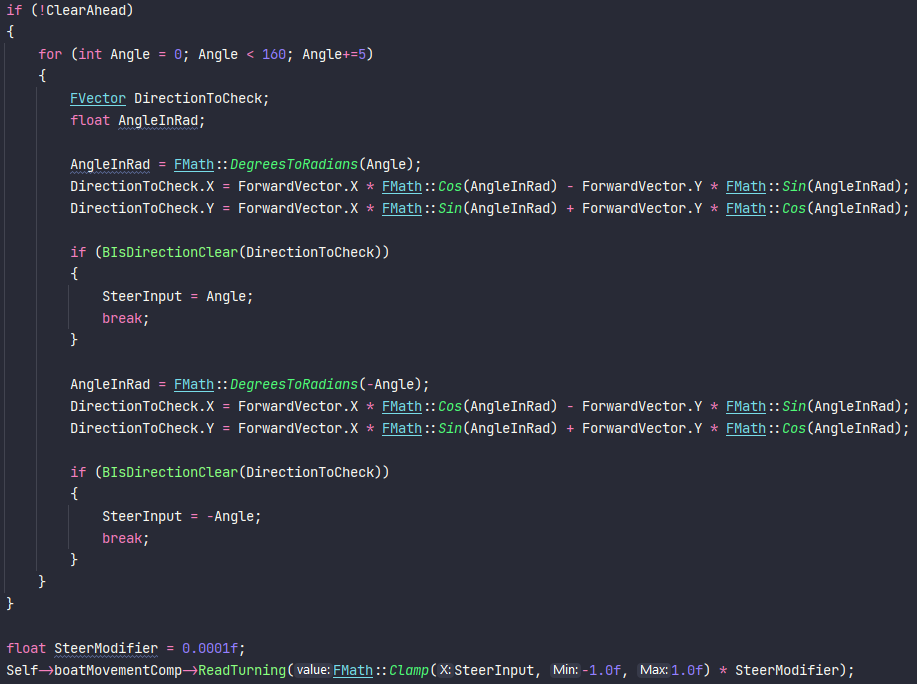
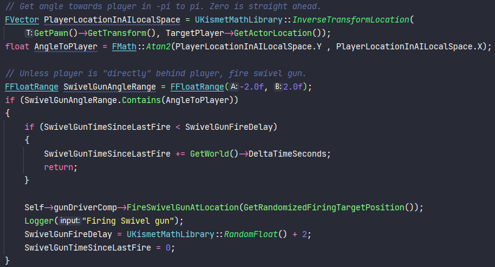
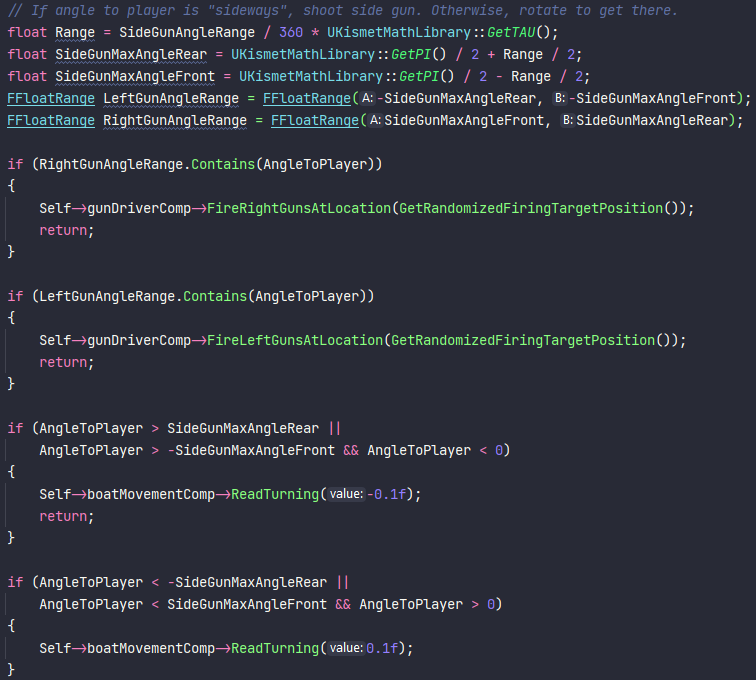

Environment: Unreal/C++
Futuregames school project
Team size: 10
Programmers: 3
Link to these files on GitHub
A game set in a future where the earth has been flooded by water. Using your ship you fight off enemies while collecting enough crew and upgrades to conquer the only remaining landmass, the peak of Mount Everest.
The part I worked on the most, and also enjoyed the most in this project was probably the enemy ship AI. Requirements: Patrol a certain area until spotting the player. Don't run into land. If player gets within a certain range chase it down. When in gun range, start shooting at player with front cannon. Also when in gun range, line up ship to get the player in range of side guns. If player gets out of range, chase it to get back in range. If enemy loses sight of player, go to where it was last seen.
The AI has a state machine with four states; patrolling, chasing, checking last known location, and attacking. At the start of the game it moves forward at the lowest speed, avoiding obstacles in front of it. If it gets too far from it's starting location it will turn around. The AI has a reference to the player game object from the get go. If player gets within a specified distance, and there is a clear line of sight it will chase the player at full speed until it gets within firing range. Once there, it will start firing the front cannon. It will also start turning the ship so either of the sides face the player, since the side guns have a limited horizontal angle range. As long as the player is within sight it's location is saved. So should the player hide behind a mass of land, enemy will go to the last known location and hopefully spot the player from there. If not, it will just start patrolling the area.
Short clips showing a bit about the different cannons's angle ranges and AI turning the boat to get player
into range. Red/green shows if player is in range of front cannon. Magenta/cyan is side cannon.

The ship scans forward for land that might be blocking the path. In case something is there it will start
scanning incrementally to both sides to find a clear path.

The front cannon can fire in any angle except a small range to the rear, as not to shoot at itself. AI will
check this and fire if possible.

Unlike the front cannon, the side cannons can only fire in a quite narrow angle to the side. AI will check
this and turn the ship as needed.
